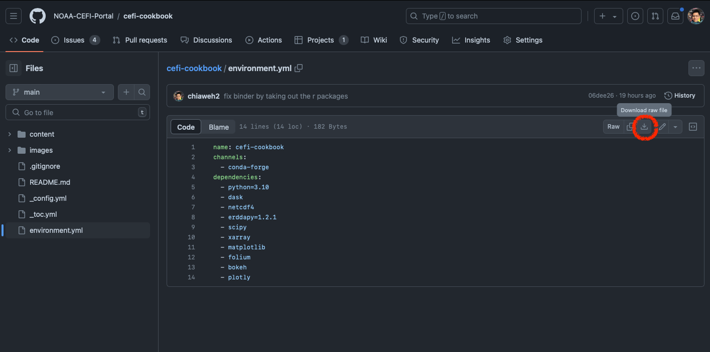

Setup An Analyses Ready Environment#
This page is designed to guide you in setting up a local computational environment, which will enable you to perform the analyses demonstrated in this cookbook locally. However, if you’re using the complimentary and lightweight cloud computing services provided by Binder or Google Colab, the environment setup is already taken care of for you in the cloud.
Steps Summary#
Install and initialize Conda (only necessary if Conda isn’t already installed on your system).
Create and activate a new “environment”, utilizing the environment.yml file.
Begin coding in Python or R within this environment.
Remember, each step is crucial to ensure the correct setup and functioning of your Conda environment.
Warning
Command Line Interface (CLI) The following steps need to be performed in Command Line Interface. For Windows, search for cmd in the search bar for the Command Prompt app. For macOS and Linux, terminal app is the preinstalled app for CLI.
Tip
There are many useful setup instructions available, but this guide is unique in providing both R and Python setup for running the examples throughout this cookbook. For additional resources related to setting up other analysis-ready environments, we recommend IOOS CodeLab.
Install and Initialize Conda#
The following intruction will install “miniconda” which is the light-weight version of Conda system. For a more customizable setup, please check out the official miniconda installation.
mkdir -p ~/miniconda3
wget https://repo.anaconda.com/miniconda/Miniconda3-latest-Linux-x86_64.sh -O ~/miniconda3/miniconda.sh
bash ~/miniconda3/miniconda.sh -b -u -p ~/miniconda3
rm -rf ~/miniconda3/miniconda.sh
After the installation, we need to initialize the Conda
~/miniconda3/bin/conda init bash
curl https://repo.anaconda.com/miniconda/Miniconda3-latest-Windows-x86_64.exe -o miniconda.exe
start /wait "" miniconda.exe /S
del miniconda.exe
After installing, open the “Anaconda Prompt (miniconda3)” program to use Miniconda3. For the Powershell version, use “Anaconda Powershell Prompt (miniconda3)”.
Why Conda? (optional read)
Conda is a software package management system that emphasizes on ‘version management’. The purpose of this ‘version management’ is to ensure that in your local computational environment, you can maintain multiple versions of the same software, tailored to the requirements of the various projects you are working on.
Important
Why do I need version control? Imagine you’ve started a project, let’s call it Project A, and you’re using version 1 of a particular software for your coding, taking full advantage of the benefits of open source. Suddenly, there’s an update, and your software is now at version 2. However, this update causes your code for Project A to stop working. This is where Conda’s version control comes in handy. It ensures that you can maintain both versions of the software. This way, you can thoroughly test Project A with the new software version before deciding to update it while still have the working Project A with version 1 existing on your local system.
Conda manages versions by creating separate ‘conda environments’. Within each ‘conda environment’, users have the freedom to choose which software and what version to install. The installed software and its specific version are confined to that particular ‘conda environment’. Users can activate a specific ‘conda environment’ to utilize the desired software and version.
Tip
A useful strategy when using the Conda system is to set up distinct environments for each project. This approach offers the flexibility to install specific software exclusively for a particular project. As a result, the software installed for one project won’t interfere with the software used in another project. This way, you can maintain the integrity and functionality of each project independently. 😊
Create and Activate Conda Environment#
Download the
environment.ymlfile from the CEFI-Cookbook repository on GitHubwget https://raw.githubusercontent.com/NOAA-CEFI-Portal/cefi-cookbook/main/environment.yml
wget https://raw.githubusercontent.com/NOAA-CEFI-Portal/cefi-cookbook/main/environment.yml
If you do not have wget (trouble shooting read)
Quick fix/try
Change
wgettocurlMethod 1 (Manuel download)
For Python and R, go to GitHub page which contain the Python version of environment.yml file
and download the
environment.ymlfile. On the top right corner of the code space, there is a “download raw file” button.
Method 2 (Manuel create the environment.yml)
Copy the environment.yml file text paste in any of the text editor, and save the file that is named as
environment.ymlCreate the “conda environment”
conda env create -f environment.yml
Activate the conda environemnt
conda activate cefi-cookbook-dev
conda activate cefi-cookbook-dev

Start Coding in Python or R#
Now that you have install the necessary software and packages. You can start coding in Python or R using your prefered text editor.
To execute the Python or R scripts
python script.py
Rscript script.R
To enter the interactive coding mode (line-by-line code execution) for Python or R
pythonR